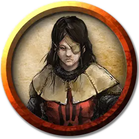

Железный консул
Iron Consul
Средний Гуманоид (Человек), законно-злой

Класс Доспеха 16 (кольчуга)
Хиты 45 (6к8 + 18)
Скорость 30 футов
| мод | спас | ||
|---|---|---|---|
| СИЛ | 17 | +3 | +3 |
| ЛОВ | 11 | +0 | +0 |
| ТЕЛ | 16 | +3 | +3 |
| мод | спас | ||
|---|---|---|---|
| ИНТ | 12 | +1 | +1 |
| МДР | 15 | +2 | +4 |
| ХАР | 16 | +3 | +3 |
Навыки Восприятие +4, Запугивание +4
Иммунитет к состояниям испуг
Чувства пассивное Восприятие 11
Языки Общий
Опасность 2 (450 опыта)
Бонус мастерства +2
Особенности
Тактическая дисциплина. Консул совершает с преимуществом все проверки характеристик и спасброски, совершаемые во время боя.
Действия
Мультиатака. Консул совершает одну атаку копьём и может использовать Командирский голос.
Копьё. . Рукопашная или Дальнобойная атака: +5 к попаданию, досягаемость 5 футов или дистанция 20/60 футов, одна цель. Попадание: 6 (1к6 + 3) колющего урона или 7(1к8 + 3) колющего урона, если используется двумя руками для совершения рукопашной атаки.
Командирский голос. Железный консул выбирает до двух союзников в пределах 90 футов, которые могут слышать его приказы. Каждый из них может немедленно использовать реакцию, чтобы совершить одну рукопашную атаку.
Описание
Бейн — бог тирании, он и его последователи жаждут править миром. Бейн даёт силу тем, кто готов править железной рукой. Навязывая миру свой порядок, последователи Бейна стремятся, чтобы умные, сильные и амбициозные достигали вершин, а слабые оставались в рабстве.
В какой бы форме Бейн ни являлся, его всегда можно узнать по угольно-чёрной правой руке. Обычно он носит на ней рукавицу или перчатку, если хочет скрыть свою сущность, и раскрывается, лишь когда приходит время показать истинную мощь. Он всегда одет с иголочки в роскошный костюм благородного или броню и снаряжение успешного генерала наёмников. Его любимое оружие — булава.
Бейн подавляет тех, кто проявит хоть каплю слабости, силой заставляет их покориться или сокрушает физической и магической мощью. Он так харизматичен, что способен убедить сильных присягнуть ему в обмен на власть над другими. Он пробуждает жажду власти, что есть в сердце любого смертного, тщательно продуманными посулами и лестью. Он — мозг Мёртвой Троицы, его амбиции направляют группу.
Преданные последователи Бейна— воители, желающие править силой оружия и принуждением, жестокие тираны, обеспечивающие верность угрозами и дарами.
Они порабощают слабых и одаряют сильных, превращая тех в верных вассалов.
Жестокие тираны. Там, где последователи Бейна захватывают власть, они устанавливают драконовские правила, чтобы защитить своё правление. Они подавляют любых соперников и щедро вознаграждают тех, кто им верен.
Культ воинов. Культисты Бейна — воители, они носят тяжёлую броню и сражаются булавами, мечами, копьями и арбалетами. Правые рукавицы своей брони они красят в чёрный в честь своего покровителя. Жрецы Бейна носят чёрные булавы с навершиями в виде сжатого кулака.
Иерархия культа. Культисты Бейна подчиняются строгой военной субординации. Низшие в иерархии — кулаки Бейна, солдаты, беспрекословно подчиняющиеся приказам. Ими командуют железные консулы, коварные полевые офицеры, умело организующие кулаков в бою. Чёрные рукавицы — это жрецы, командующие консулами.